▲ 남강 위의 바위섬. 한국관광공사 '정암루(솥바위)' 항목의 사진이며 구름 낀 초록 계절 사진이다. 촬영 시기는 자료에 없다. 사진=한국관광공사
"의령은 가 볼 만한 곳이 뭐가 있고, 반나절이면 다 돌 수 있을까?" 11~12월 비수기에 의령읍 안에서 반나절만 쓸 수 있는 사람을 위해, 의령군청과 한국관광공사(TourAPI) 자료에서 확인되는 곳만 골랐다. 의령군 공식 '당일 1코스'의 구간 수치를 합치면 충익사에서 솥바위까지 6.6km, 자가용 약 15분이다(합산은 카프리즘 계산). 쉬는 날과 문 닫는 시간만 먼저 맞추면 동선은 어렵지 않다. 의령군 당일 1코스 바로가기
💡 먼저 결론
충익사·의병박물관(09:00 개관) → 의령소바(11:00 영업 시작) → 의령구름다리 → 정암루·솥바위 순서가 한국관광공사 운영 정보와 가장 잘 맞는다. 의병박물관은 무료이고 월요일이 휴관이다. 11~12월의 일몰 시각·기온·행사 일정은 공식 자료로 확인하지 못해 싣지 않았다.
1. 반나절이면 되나 — 5곳의 운영 정보 한눈에
반나절 코스는 가능하다. 의령읍 안에 명소 4곳과 식당 1곳이 모여 있다. 기준일은 2026년 10월 22일이며 시간·요금은 한국관광공사 TourAPI 값(지자체 입력 기준)이다.
| 장소 | 시간·휴무 | 요금·주차 | 문의 |
|---|---|---|---|
| 충익사(충익로 1) | 09:00~18:00, 연중무휴 | 입장료 항목 없음(한국관광공사에 요금 칸이 비어 있음). 주차 가능(약 30대). 별도 등록된 '충익사 의병탑' 항목은 상시 개방·주차 무료. 의령군 안내는 의령천 둔치 주차장에 세우고 의병교를 건너 들어가는 동선을 소개하며 휠체어 1대를 갖췄다고 적음 | 충익사관리소 055-573-2629(한국관광공사), 055-570-2535(의령군) |
| 의병박물관(충익로 1-25) | 09:00~18:00, 매주 월요일·1월 1일 휴관(월요일이 공휴일이면 다음 첫 평일) | 무료, 주차 무료. 입장은 관람 종료 30분 전까지(의령군) | 055-570-2845 |
| 김할머니의령소바(의병로16길 29) | 11:00~17:00, 연중무휴 | 주차 가능(요금 확인하지 못함) | 055-572-3100 |
| 의령구름다리(벽화로 622-5) | 상시 개방, 연중무휴 | 주차 가능(요금 확인하지 못함) | 시설관리사업소 055-570-2830 |
| 정암루(솥바위)(남강로 686) | 상시 개방, 연중무휴 | 주차 가능(요금 확인하지 못함) | 의령읍사무소 055-570-4333(한국관광공사), 문화관광과 055-570-2510(의령군) |
박물관과 충익사는 18시, 김할머니의령소바는 17시에 닫기 때문에 이 세 곳이 하루 일정의 마감선이 된다. 구름다리와 솥바위는 상시 개방이라 마지막에 두는 편이 안전하다. 대한민국 구석구석 바로가기
2. 충익사·의병박물관 — 월요일에 가면 어떻게 되나
월요일에는 의병박물관이 문을 닫지만 충익사는 연중무휴(09:00~18:00)로 표기돼 있다. 의령군 코스상 충익사에서 의병박물관까지는 0.4km, 2분이다. 의령군 당일 1코스 바로가기
충익사는 임진왜란 때 처음 의병을 일으킨 곽재우 장군과 17장령의 위패를 모신 사당이다. 한국관광공사 설명에 따르면 충의각, 충익사당, 기념관이 있고 기념관 뒤에 의병박물관이 있다. 충익사당에서는 매년 4월 22일 추모제향을 올린다. 11~12월의 해설 프로그램은 확인하지 못했다.
의령군 안내로 동선을 그려 보면, 의령천 둔치 주차장에 차를 세우고 의병교를 건너면 둥근 고리를 층층이 쌓은 의병탑이 보이고, 오른편 관리사무소를 지나 충의문을 들어서면 잔디밭이 나온다. 충의각 옆에는 경상남도 지방기념물 제83호로 지정된 수령 약 500년의 모과나무가 있다. 입장료는 군 안내에도 한국관광공사에도 항목이 없어 "무료"로 단정하지 않고 "요금 항목 없음"으로 적는다.
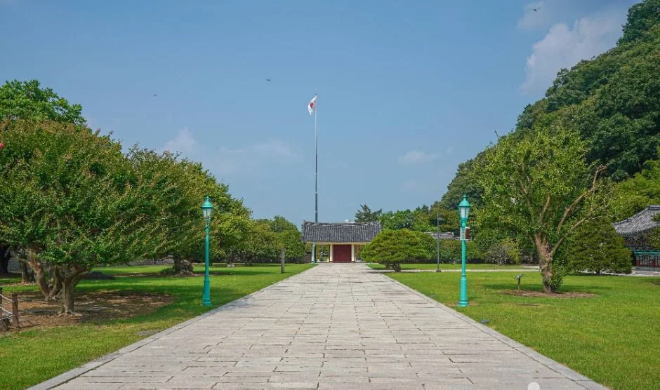
▲ 충익사 진입 돌길. 초록 계절의 사진이다. 사진=한국관광공사
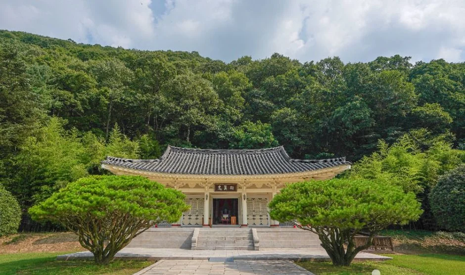
▲ 숲을 배경으로 한 충익사 경내의 기와 건물. 건물 명칭은 자료 사진 설명에 없다. 초록 계절의 사진이다. 사진=한국관광공사
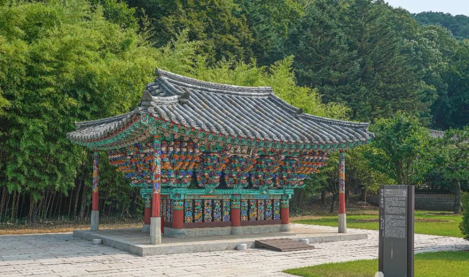
▲ 충익사 경내의 단청 누각. 명칭은 자료에서 확인하지 못했다. 초록 계절의 사진이다. 사진=한국관광공사
의병박물관은 한국관광공사 정보로 무료이고 주차도 무료다. 의령군 안내에는 2012년 6월 1일 개관했고 고고역사실, 의병유물전시실, 특별전시실, 영상실이 있다고 적혀 있다. 한국관광공사 설명은 임진왜란 의병 전시와 함께 구한말~일제강점기 독립운동가 유품을 전시하는 제2전시관을 소개한다.
관람 시간은 09:00~18:00이고 입장은 종료 30분 전까지다. 문의 번호는 의령군 의병박물관 소개 페이지와 한국관광공사가 055-570-2845이고, 같은 군 사이트의 '찾아오시는 길' 페이지에는 055-572-2845가 안내문의로 적혀 있어 두 번호가 함께 쓰인다(소개 페이지 담당 팀 번호는 055-570-2842). 전화가 안 이어지면 다른 번호를 시도하는 편이 낫다. 의병박물관 소개 바로가기
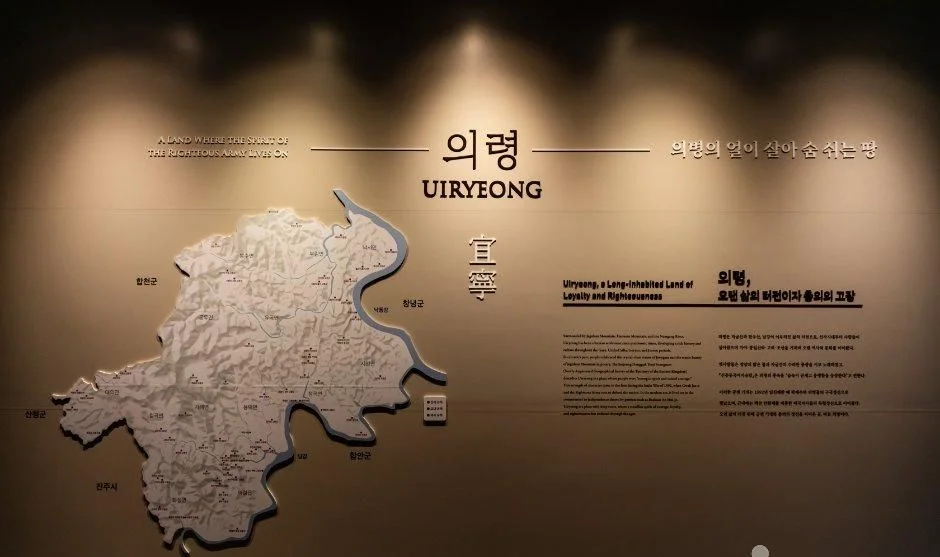
▲ 박물관 전시실의 의령 지도 전시. 실내 사진이라 계절은 알 수 없다. 사진=한국관광공사
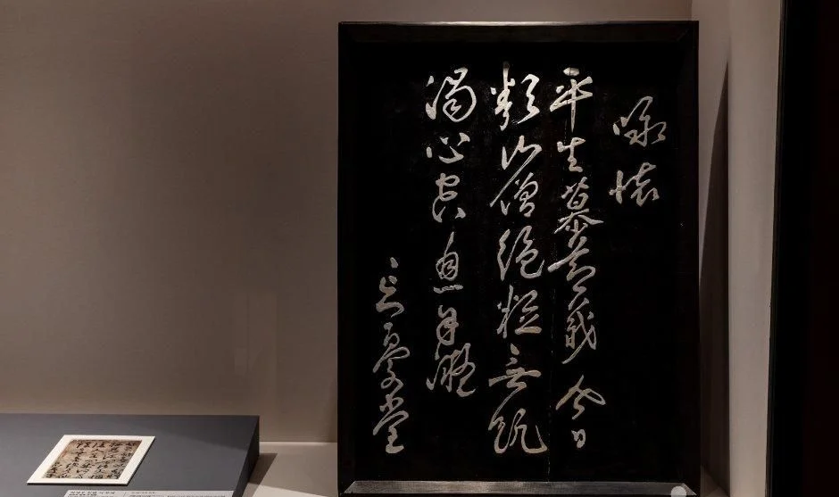
▲ 박물관 전시 중 한 점. 작품명과 작가는 자료에서 확인하지 못했다. 사진=한국관광공사
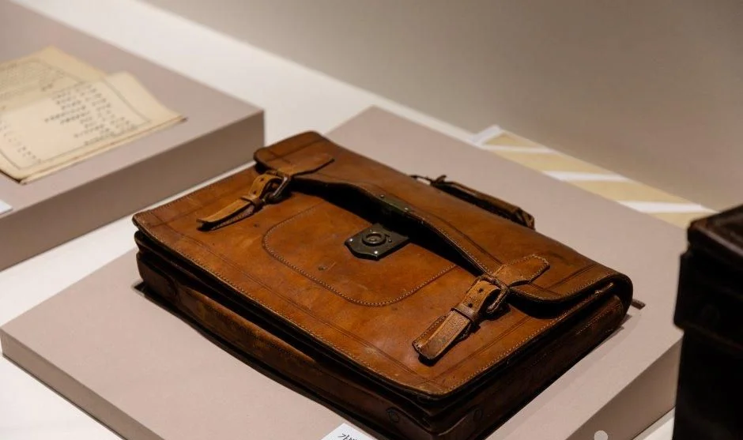
▲ 박물관 유품 전시. 어느 인물의 유품인지는 자료에 표기돼 있지 않다. 사진=한국관광공사
3. 점심 — 이름이 비슷한 의령소바 업소가 둘이다
한국관광공사에 등록된 곳은 의병로16길 29의 김할머니의령소바이고, 영업은 11:00~17:00, 연중무휴, 주차 가능이다. 대표 메뉴는 냉소바·온소바이며 메밀 만두, 수제 돈가스, 뚝배기불고기, 소머리국밥 등도 낸다고 소개돼 있다. 가격은 한국관광공사 정보에 없어 확인하지 못했다.
의령군청 맛집 안내에는 의병로18길 3-5(055-572-0885)에 있는 '의령소바'가 별도로 올라 있다. 한국관광공사에는 이곳이 '의령소바 본점'으로 등록돼 있고, 영업 10:00~20:00(마지막 주문 19:30), 연중무휴, 주차 불가, 문의 0507-1411-0885로 안내된다. 김할머니의령소바(11:00~17:00, 주차 가능)와 영업시간·주차 조건이 다르다. 이름이 비슷한 업소가 둘이라 내비게이션에 넣기 전에 주소를 확인하는 편이 안전하다. 의령군 맛집 안내 바로가기
| 출발 | 직선거리 |
|---|---|
| 충익사 | 약 0.17km |
| 의병박물관 | 약 0.29km |
| 의령구름다리 | 약 0.61km |
세 곳 모두 직선으로 1km 안쪽이라 박물관 관람 뒤 소바집이 열리는 11시에 맞추기 쉽다. 좌표로 계산한 값이어서 실제 걷는 길은 더 길 수 있다.
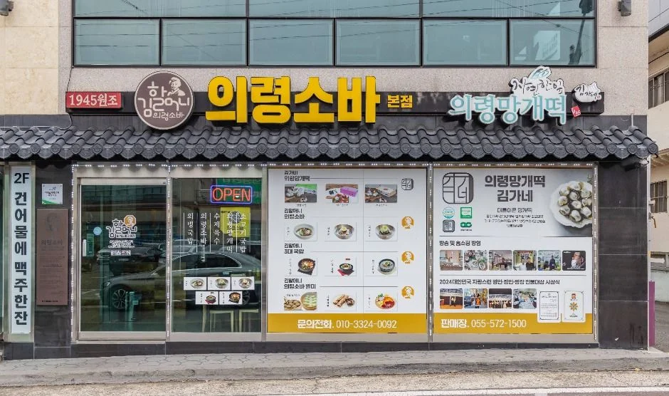
▲ 의령소바 식당 외관. 한국관광공사 '김할머니의령소바' 항목의 사진이다. 사진=한국관광공사
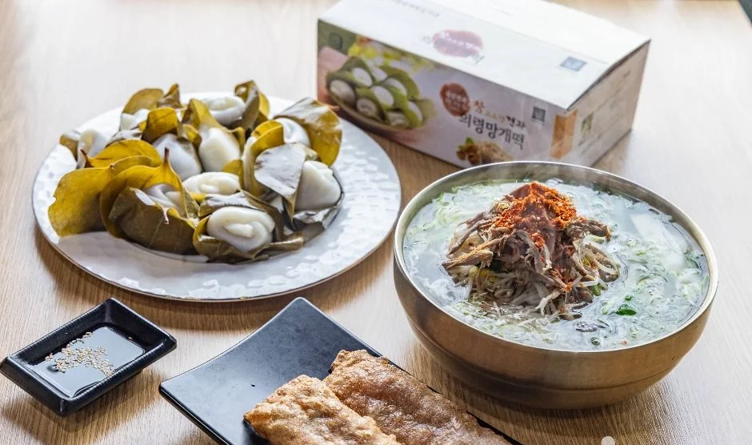
▲ 식당 소개 사진 속 한 상 차림. 어떤 메뉴인지는 자료에 명시돼 있지 않다. 사진=한국관광공사
4. 구름다리에서 솥바위까지 — 공식 이동거리·시간표
의령군 '당일 1코스' 구간 수치를 그대로 옮기면 충익사에서 솥바위까지 6.6km, 15분이다. 이동 시간은 군 자료의 자가용 기준이고 합계는 카프리즘 계산이다. 의령군 당일 1코스 바로가기
| 구간 | 거리 | 시간(자가용) |
|---|---|---|
| 충익사 → 의병박물관 | 0.4km | 2분 |
| 의병박물관 → 의령구름다리 | 1.6km | 5분 |
| 의령구름다리 → 의병광장 | 4.1km | 6분 |
| 의병광장 → 정암루 | 0.4km | 1분 |
| 정암루 → 솥바위 | 0.1km | 1분 |
| 합계(카프리즘 합산) | 6.6km | 15분 |
구름다리와 정암루 사이에 '의병광장'이 끼어 있어, 이 합계는 직행 거리가 아니라 군이 정한 경유 순서의 합이다. 구름다리에서 정암루로 바로 가는 거리는 공식 자료에서 확인하지 못했다.
의령구름다리는 2005년 준공된 총길이 258m, 주탑 높이 48m의 보행교로 한국관광공사 설명에 올라 있다. 구조물의 붉은색은 곽재우 장군의 홍의를 모티프로 했고, 주탑의 흰 고리 18개는 곽재우와 17장령을 상징하는 충익사 의병탑을 본뜬 것이다. 밤에는 400여 개 LED 조명이 켜진다고 소개돼 있으나 11~12월의 점등 시간은 확인하지 못했다. 의령군청의 구름다리 소개 페이지에는 258m·48m·LED 수치가 없고(관리 시설관리사업소 055-570-2830, 주차 가능, 장애인 편의시설 없음), 이 수치는 한국관광공사 설명과 한 여행 매체가 같은 값으로 전한 것이라 군 원문과의 대조는 하지 못했다.
군 페이지는 구름다리 터를 자굴산에서 흘러오는 의령천과 벽화산 기슭에서 내려오는 남천이 합쳐지는 삼각지로 설명하며, 주탑에서 동쪽으로 솥바위가 보인다는 점을 소개한다.
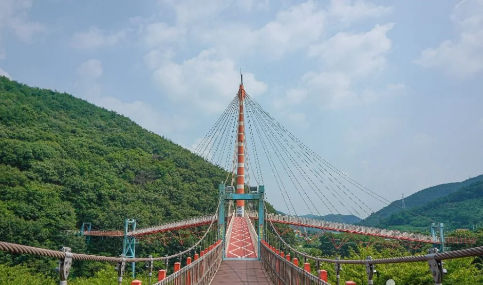
▲ 의령구름다리 전경. 초록 계절의 사진이다. 사진=한국관광공사
▲ 멀리서 본 의령구름다리. 초록 계절의 사진이다. 사진=한국관광공사
▲ 구름다리 보행로. 초록 계절의 사진이다. 사진=한국관광공사
5. 솥바위 — 전설은 어디까지 확인되나
정암루는 남강 가의 누각이고, 솥바위는 남강에 솟은 바위섬이다. 한국관광공사 설명에 따르면 정암루는 곽재우 장군이 정암전투에서 승리한 것을 기념해 세웠고 옛 나루터였던 자리다. 상시 개방·연중무휴, 주차 가능이며 입장료 항목은 확인하지 못했다. 의령군 소개에 따르면 이곳은 옛 나루터였고, 임진왜란 때 곽재우 장군이 왜장 혜경이 이끈 왜적을 잠복 끝에 물리친 승전지다. 군 안내는 남해고속도로 군북IC에서 10분가량 달리면 의령 관문에 닿는다고 적었다.
솥바위 일대의 '부귀' 이야기는 한국관광공사 설명에 "정암을 중심으로 반경에는 부귀가 끊이지 않는다는 이야기가 전해져 내려온다"고 적혀 있다. 의령군청의 구름다리 소개는 반경을 30리(12km)로 적었고, 이 범위 안에 호암 이병철(의령 정곡면)이 있고 만우 조홍제(함안 군북면)·연암 구인회(진주 지수면)도 태어났다고 설명한다. 반면 한 언론 보도는 반경을 20리(약 8km)로 전해 자료마다 수치가 다르다. 의령군은 2022년부터 리치리치 페스티벌을 열어 왔는데, 이는 전해 오는 이야기를 관광 콘텐츠로 쓴 것이지 근거를 확인한 사실이 아니다. 관련 보도 바로가기
올해 리치리치 페스티벌(제5회)은 2026년 10월 2~5일 의령군민공원과 솥바위 일원에서 열렸고 이미 끝났다(서울신문 보도). 같은 보도에 따르면 지경면 성산리 호국의병의 숲 친수공원에서는 '기강 리치 꽃축제'가 9월 27일부터 10월 25일까지 이어지며, 핑크뮬리·댑싸리·코스모스 등이 차례로 핀다고 소개됐다. 10월 25일 이후 의령에서 열리는 행사는 확인하지 못했고, 11~12월에 솥바위 일대에서 정해진 행사가 있다는 공식 안내도 찾지 못했다. 서울신문 보도 바로가기
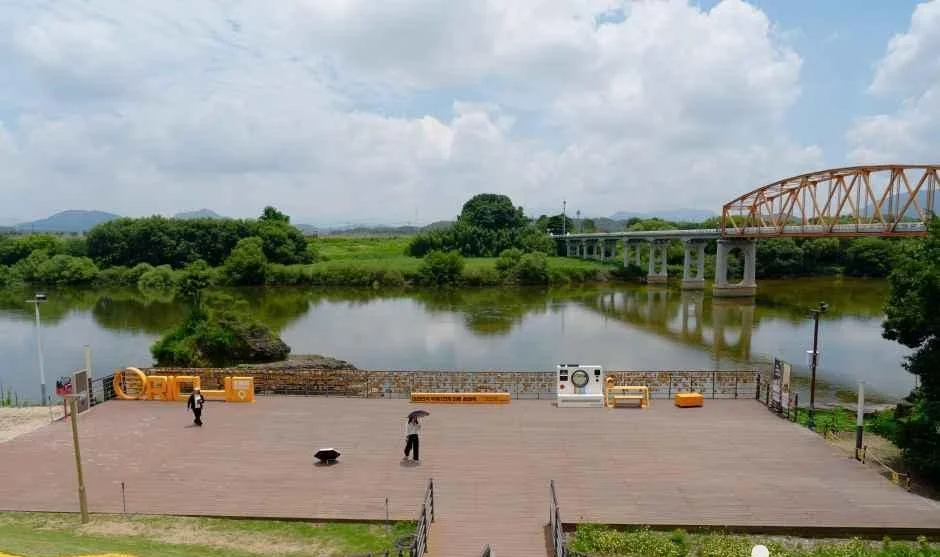
▲ 정암루 일대 강변 광장. 구름 낀 초록 계절의 사진이다. 사진=한국관광공사
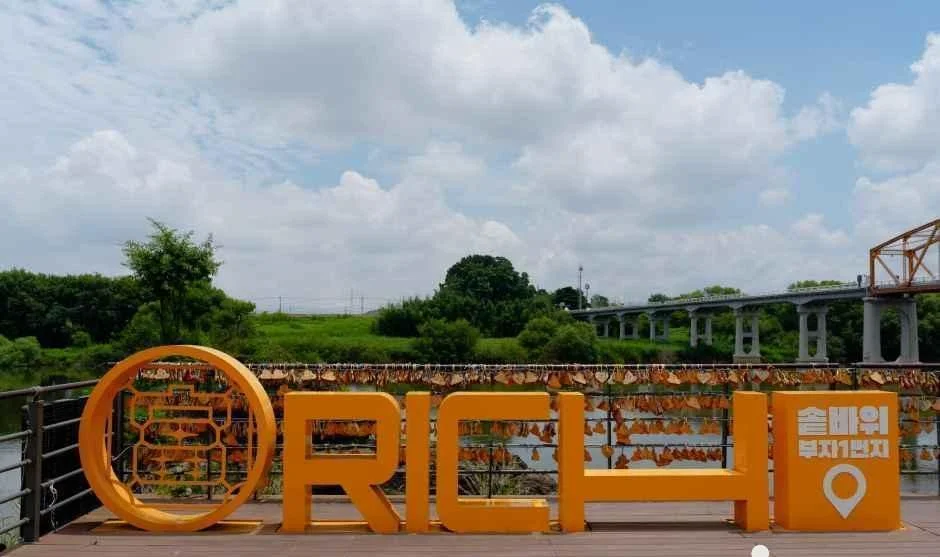
▲ 정암루 일대의 RICH 조형물. 한국관광공사 항목의 사진이다. 사진=한국관광공사
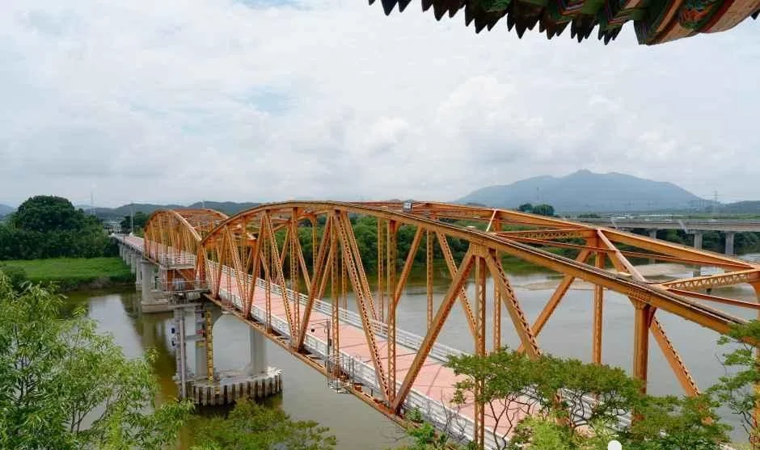
▲ 솥바위 인근 강을 가로지르는 철교. 명칭은 자료에서 확인하지 못했다. 초록 계절의 사진이다. 사진=한국관광공사
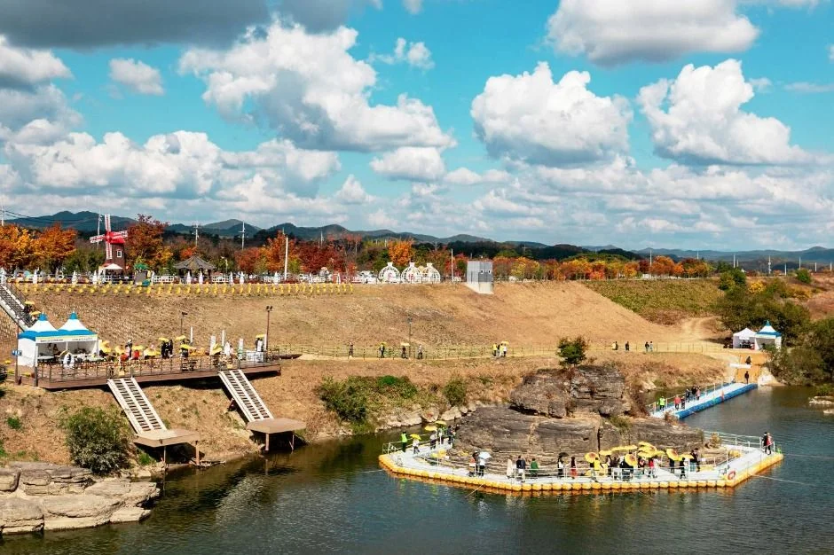
▲ 단풍 든 나무를 배경으로 솥바위 옆 수상 탐방로에 사람들이 모여 있다. 정암루(솥바위) 항목의 사진이며 촬영일과 행사 여부는 자료에 없다. ⓒ 한국관광공사 · 공공누리 제3유형(변경금지)
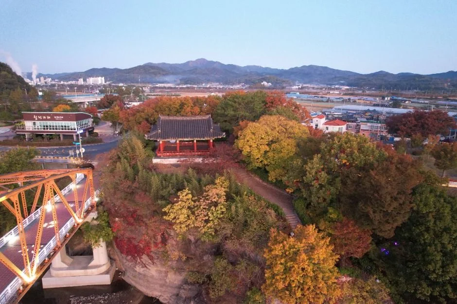
▲ 단풍이 든 숲 위의 정암루와 철교. 해 질 무렵으로 보이는 정암루(솥바위) 항목의 사진이며 촬영일은 자료에 없다. ⓒ 한국관광공사 · 공공누리 제3유형(변경금지)
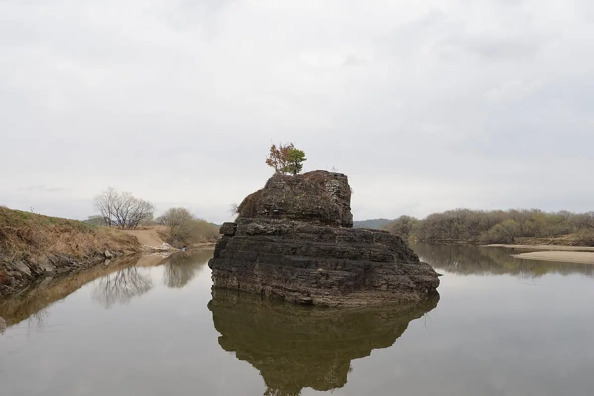
▲ 남강 위의 솥바위. 하늘이 흐리고 강가 풀이 갈색으로 마른 모습이다. 작성자가 2023-03-12에 촬영해 올린 이른 봄 사진이어서 11~12월 풍경 참고용이다. 사진=Dittwjfsdgkvkdjg · Wikimedia Commons · CC BY-SA 3.0
✅ 출발 전 체크
1) 월요일은 의병박물관 휴관 2) 충익사·박물관은 18시, 소바집은 17시 종료 3) 소바집은 이름이 비슷한 업소가 둘이라 주소 확인 4) 11~12월 일몰·기온·솥바위 행사는 확인하지 못함 5) 코스 사진은 초록 계절이 많고 가을·겨울 사진은 정암루 일대 4장과 일붕사 1장 정도라 현장 풍경과 다를 수 있음.
6. 11~12월에 달라지는 점 — 확인한 것과 못 한 것
이 코스는 실내(박물관)와 야외(충익사·구름다리·솥바위)가 섞여 있다. 다만 겨울철 한정 운영 변경이나 야간 조명 시간표는 공식 자료에서 찾지 못했다.
| 항목 | 확인한 것 | 확인하지 못한 것 |
|---|---|---|
| 운영시간·휴무 | 한국관광공사 정보의 시간, 박물관 월요일 휴관 | 겨울철 변경 여부 |
| 요금 | 의병박물관 무료·주차 무료 | 다른 곳 주차 요금(충익사 입장료 항목은 공식 자료에 없음) |
| 이동 | 군청 코스 구간 거리·시간 | 구름다리~정암루 직행 거리(군 코스는 의병광장 경유 합계만 제시) |
| 대중교통 | 의병박물관 '찾아오시는 길'(서울 기점): 진주시외버스터미널에서 의령버스터미널로 간 뒤 의령우체국 정류장 하차 후 도보, 또는 마산역에서 114-1번 후 군북 환승해 의령전통시장 정류장 하차(도보 14분·870m) | 배차 간격, 코스 내 곳곳의 정류장 |
| 계절 | — | 일몰 시각, 11~12월 기온, 구름다리 점등 시간, 솥바위 행사 |
대중교통은 의병박물관 '찾아오시는 길' 페이지의 설명이며 시간표가 아니다. 읍내 거점 간 구간이 군 코스에서 0.4~4.1km로 나뉘어 있어서, 마지막 구간 이동 방법은 출발 전에 의령군에 확인하자.
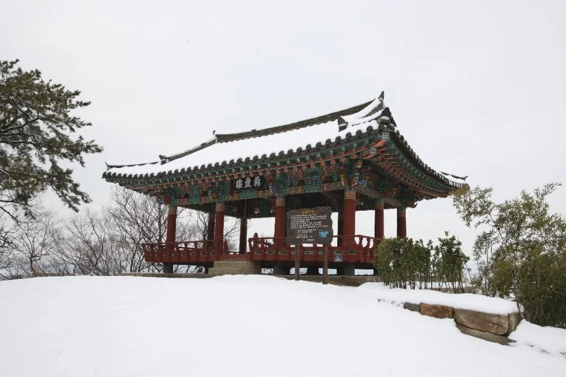
▲ 눈 덮인 정암루. 현판에 '鼎巖樓'가 보이는 정암루(솥바위) 항목의 사진이며 촬영일은 자료에 없다. ⓒ 한국관광공사 · 공공누리 제3유형(변경금지)
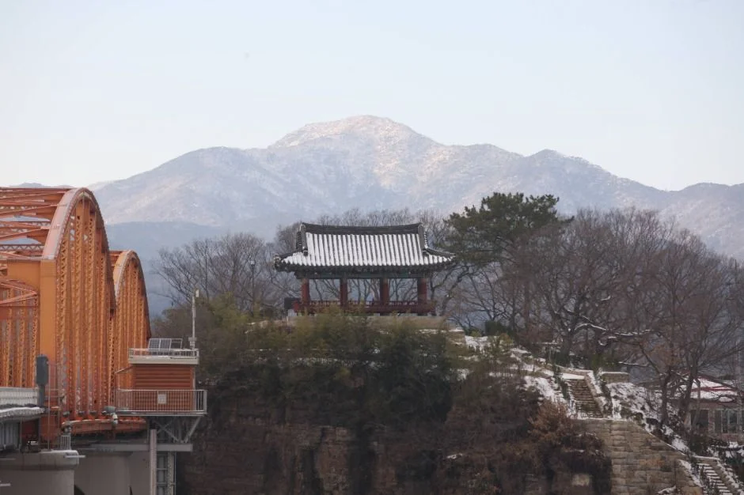
▲ 눈이 얹힌 산과 정암루, 철교. 겨울 풍경을 가늠할 참고 사진이며 촬영일은 자료에 없다. ⓒ 한국관광공사 · 공공누리 제3유형(변경금지)
7. 더 길게 간다면 — 호암 생가·일붕사
반나절을 넘겨 시간이 남으면 군 당일 1코스에 든 곳을 더할 수 있다. 다만 정곡면과 궁류면은 읍내에서 떨어져 있다.
| 장소 | 확인한 내용 | 미확인 |
|---|---|---|
| 호암 이병철 선생 생가(정곡면 호암길 22-4) | 10:00~17:00, 매주 월요일 휴무, 주차 가능(한국관광공사). 좌표 기준 솥바위에서 직선 약 7.9km(카프리즘 계산) | 요금 항목(군·한국관광공사 모두 없음), 솥바위에서 도로 거리·시간. 문의 055-573-0723(군 안내) |
| 일붕사(궁류면 청정로 1202-15) | 군청 당일 1코스 경유지, 봉황대에서 0.1km. 군 설명은 대한불교 일붕선교종 총본산으로 동굴 법당이 2개 있고 세계 최대 동굴법당으로 기네스북에 올랐다고 소개(군 설명 그대로이며 기네스 기록은 별도 확인하지 못함) | 운영시간·요금·주차(군 페이지에 해당 항목 없음) |
두 곳 모두 정곡면·궁류면으로 읍내에서 멀고 운영 정보가 군 페이지에 일부만 있어, 반나절 코스에 넣기보다 시간이 남을 때 전화로 확인하고 더하는 선택지에 가깝다.
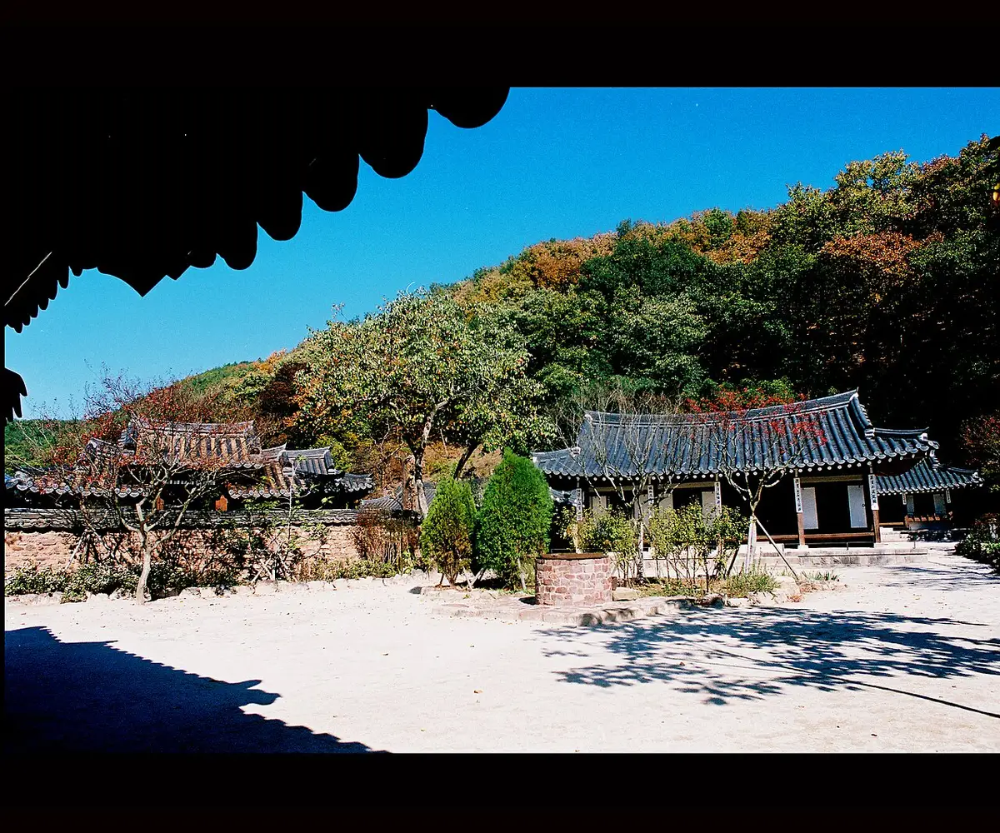
▲ 호암 이병철 선생 생가 경내로 소개된 사진. 숲이 주황·초록으로 섞여 보이지만 촬영일은 자료에 없다(커먼즈 업로드 2014년 1월). 사진=Jin1354(한국어 위키백과 업로더) · Wikimedia Commons · CC BY-SA 3.0
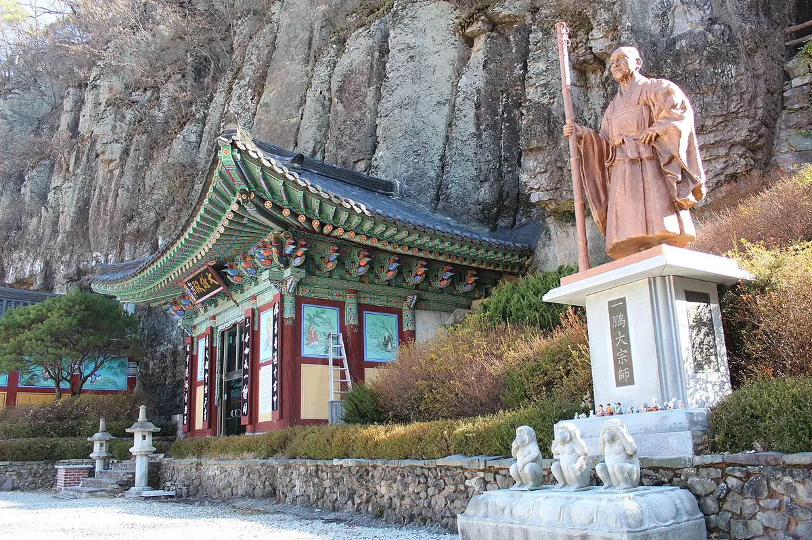
▲ 일붕사 경내. 절벽 아래 법당과 동상이 보이며 파일 정보상 촬영일은 2012-11-24로, 11월 하순 풍경을 가늠할 참고 사진이다. 사진=의령사랑 위키 어린이 기자단 · Wikimedia Commons · CC BY-SA 3.0
군청 코스는 솥바위에서 수도사(10.2km·23분), 탑바위(12.8km·26분), 불양암(0.1km·1분), 호암생가(2.7km·8분) 순으로 이어진다. 경유 합계는 약 25.8km다. 호암 생가까지 반나절에 넣으려면 중간 경유지를 건너뛰어야 하고, 직행 거리는 확인하지 못했다.
같은 남강 유역의 진주는 진주 남강 유등축제 기사, 이웃 창녕의 습지는 창녕 우포늪 기사, 경남 가을 억새 산행은 합천 황매산 억새 기사를 함께 보면 인근 일정을 잇기 좋다.
8. 정리
의령읍 반나절 코스는 충익사 → 의병박물관 → 의령소바 → 구름다리 → 솥바위 순서가 운영시간과 맞고, 공식 구간 합산은 6.6km·15분이다. 의병박물관은 무료이고 월요일 휴관이며, 충익사·박물관은 18시, 소바집은 17시에 닫는다.
겨울철 운영 변경, 일몰 시각, 구름다리 점등 시간, 10월 25일 이후 행사 일정(리치리치 페스티벌은 10월 5일 종료), 여러 곳의 주차 요금은 확인하지 못했다. 충익사는 한국관광공사 요금 항목이 비어 있다. 이 글은 2026년 10월 22일 기준이므로 출발 전 의령군에 한 번 더 확인하자.